A témakör célja, hogy megismerkedjünk a Node.js-szel.
Először is kell egy fejlesztői környezet, mert egy idő után eléggé meg fog nőni a filestruktúránk. Ez az IDE legyen a Visual Studio Code.
Ezután töltsük le a hivatalos honlapról a Node.js telepítőjét. Ez lehet vagy az LTS, vagy a Current verzió.
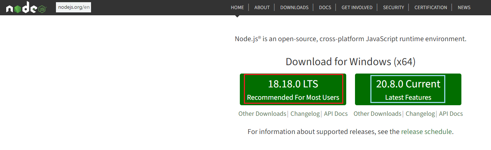
A telepítés lépései:
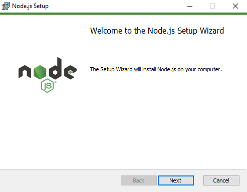
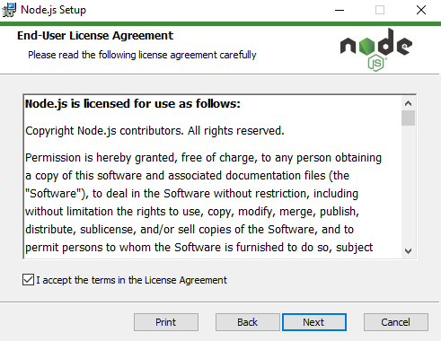
Maradjon minden alapértelmezett:
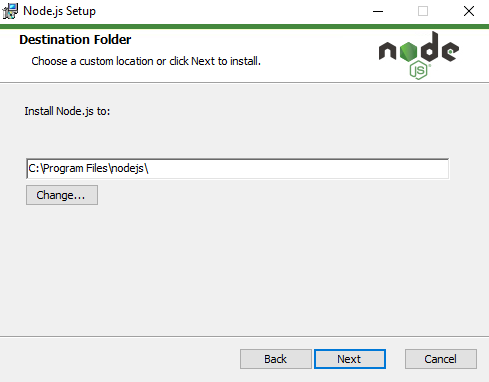
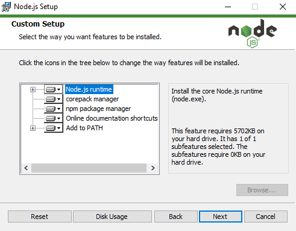
Utolsó lépések:
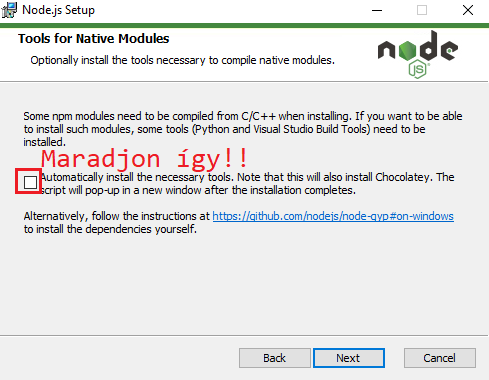
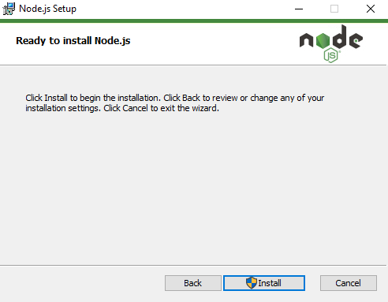
A Node.js-szel az npm csomagkezelő is feltelepül. Ezt nagyon sokat fogjuk használni.
Ellenőrzéshez nyissuk meg a parancssort:
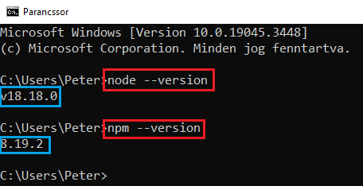
REPL: "Read, Eval, Print, Loop" - egy interaktív shell (szerkesztőfelület) a parancssorban. Ehhez gépeljük be a node parancsot a parancssorba:
Ezen a felületen bármilyen Node.js utasítást kiadhatunk:
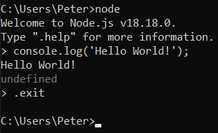
Ebben az esetben a szabványos "Hello World!" kiíratását.
Kilépni az .exit utasítás kiadásával lehet.
- Hozzunk létre egy mappát node_gyakorlas néven bárhol a számítógépen.
- Hozzunk létre egy hello_world.js nevű állományt a mappában.
- Nyissuk meg a Visual Studio Code-ot.
- Gépeljük be a következő sort: console.log('Hello World!');
- Nyissuk meg a beépített terminált ctrl+shift+ö, és írjuk be: node hello_world.js. Az eredmény:
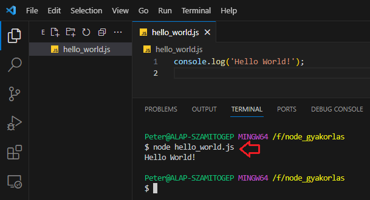
- Ugyanerre az eredményre jutunk, ha a node hello_world utasítást adjuk ki, mert a futtatókörnyezet alapértelmezetten .js kiterjesztést adja az állományhoz.
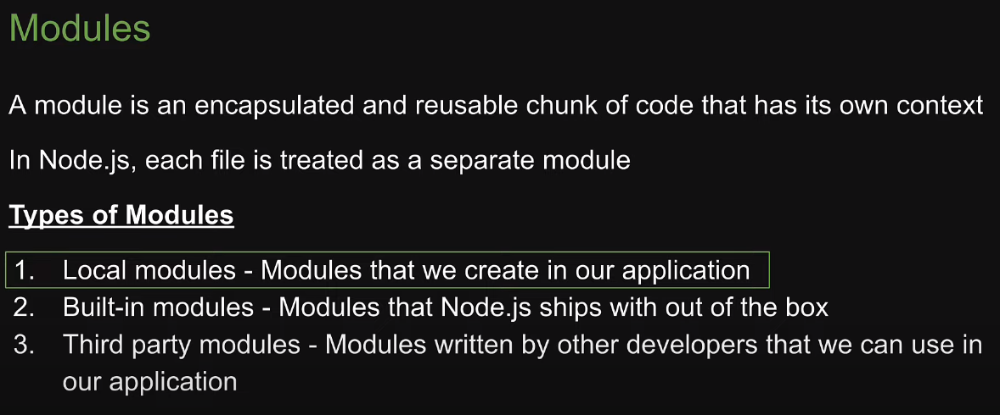
helyi modul: azok a modulok, melyeket mi hozunk létre és használunk az alkalmazásunkban
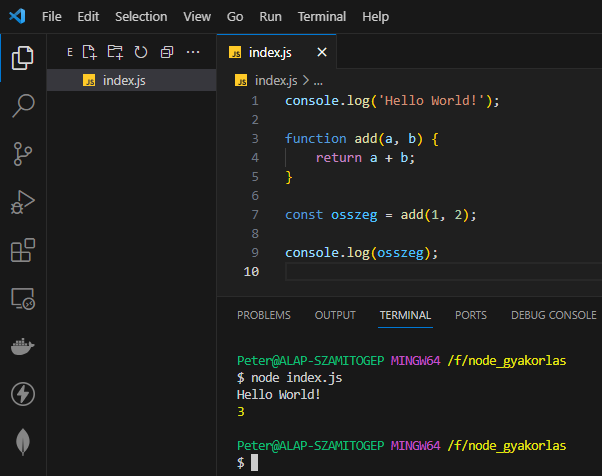
Próbáljuk meg az add függvényt kivinni és elhelyezni egy külön állományban, majd hívjuk meg az index.js állományban.
Ehhez szükséges a következő fogalom:
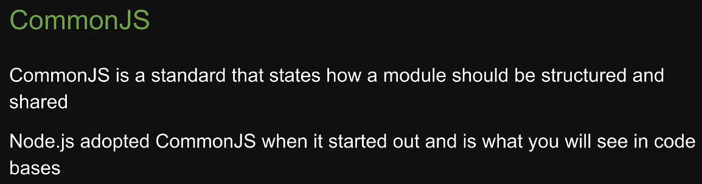
Használjuk az "univerzális" require() függvényt, amellyel modulokat (nem csak helyi modulokat) tudok "behúzni" az állományunkba:
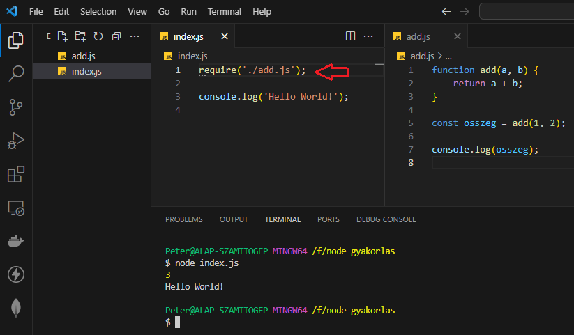
A require() függvényben a .js kiterjesztés elhagyható! Legtöbbször ezt fogjuk tenni.
Hogy hogyan kerül át az add.js állomány eredménye a Run and Debug fül segítségével nézhető meg. Adjunk meg legalább egy törőpontot (breakpoint).
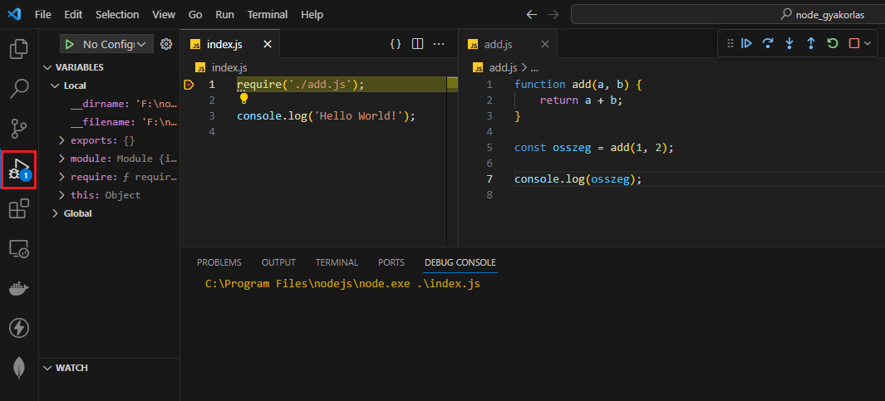
Összefoglaló:
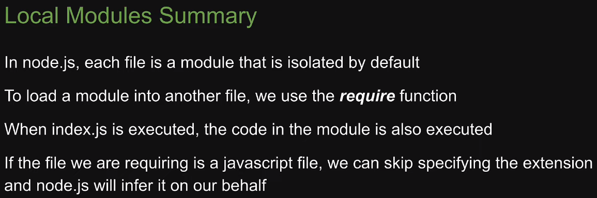